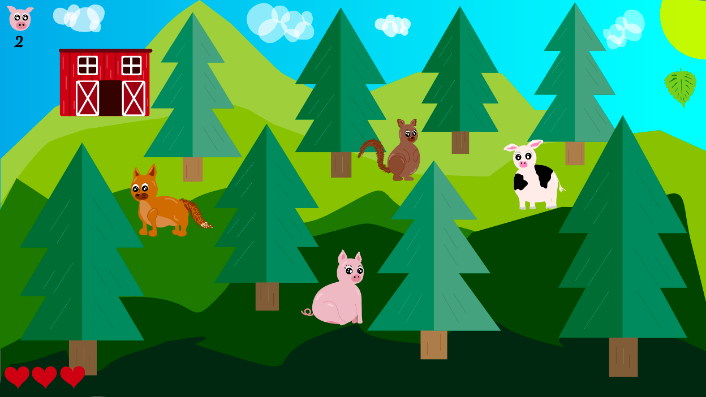
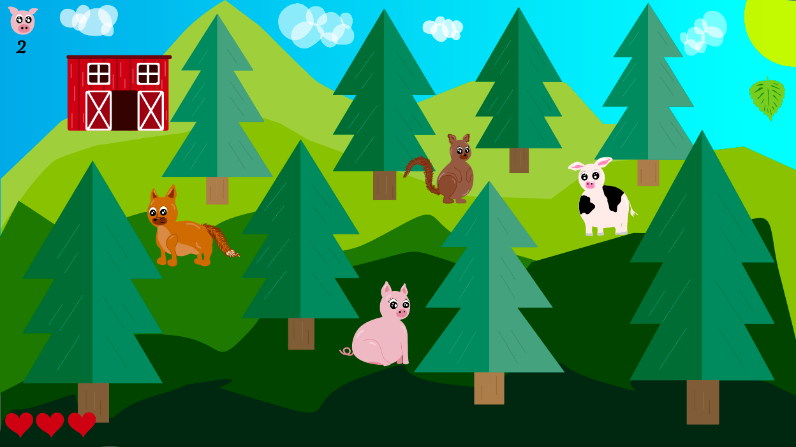

Isabell's Portfolio
Tema 02 - Grundlæggende web
Responsive site V2
Link til website:
Responsive site v2
I dette tema lærte vi grundlæggende principper for design og
programmering af digitale løsninger vha. HTML og CSS, med udgangspunkt
i en tildelt stil (samt viden om alle andre stile). Stilen jeg fik var
Hipster, og derfor er min hjemmeside inspireret af denne, hvor jeg har
anvendt mig af lys/mørke kontrast ift. farvelære.
Jeg startede ud med at lave to moodboards til inspiration, samt et
styletile over en hipster-inspireret hjemmeside.
Vi lærte desuden om layout og kompositionsprincipper samt opsætning af
grid- og flexbokse i CSS.

Fremgang:
Websitet blev designet som mobile-first og vi havde bestemte
wireframes og layoutdiagrammer vi skulle gå ud fra.
Først designede jeg hjemmesiden og faviconet designet i Adobe Xd, som
content til sitet. Splashbilledet blev desuden lavet i Photoshop, ved
hjælp af linkedin learning samt youtube videoer. I mit splashbillede
har jeg benyttet mig af rule of thirds komposition og whitespace.
Jeg valgte at lave en hjemmeside med salg af håndlavede ure, da jeg
synes det passede godt ind i hipster-stilen.
Jeg anvendte mig af online fonte, text type sans serif til brødtekst
og displaytype handwritten til overskrifterne.
Jeg lavede desuden et styletile, som ser således ud:
Udfordringer:
Jeg oplevede visse udfordringer i dette tema, da jeg blev syg lige
netop den uge hvor vi skulle have de sidste ting på plads og havde
studiestartsprøve, dog lykkedes det fint med at færdiggøre opgaven
alligevel.
Desuden har jeg haft en masse problemer med at mine billeder havner i
iCloud "skyen" og derfor konstant bliver fjernet fra hjemmesiderne.
Har prøvet at slå det fra på min computer og rykke alt over til at
ligge lokalt, men det er desværre stadig et problem som jeg ikke ved
hvordan jeg skal løse.
Tema 03 - Grundlæggende UX
Prototype 2
I dette tema udarbejdede vi en prototype af et website der sælger
t-shirts.
For at få det bedst mulige resultat er vi blevet præsenteret for UX
research og tests for at få viden om brugernes adfærd.
Koncept:
Styletile & Moodboard:

Solution Sketch & Prototype 1
Fremgang:
Prototypen designede jeg i Adobe XD med interaktive knapper,
konventioner, indholdskomponenter og flere forskellige sider.
Royalty free billeder blev fundet på unsplash.com og pexels.com og
visse blev taget selv, og derefter redigeret i photoshop for at have
alle i en bestemt stil. Jeg valgte at min stil på billederne skulle
være "glad" med dydbeskarphed, falsk lys og solskin samt feminin.
Jeg foretog personligt interview research med en i målgruppen for at
få konkrete oplysninger. Desuden lavede jeg online survey research
hvor jeg fik svar fra 31 respondenter indenfor den specifikke
målgruppe, som jeg fandt gennem facebookgrupper. Jeg foretog også
flere tænke-højt tests (five-act interview) med andre fra klassen. Jeg
ændrede designet en del gange på grund af interview- og survey
research, analyse og testing. Jeg gjorde brug af copywriting for at få
den bedste brugeroplevelse.
Skitser & inspiration


Research, copy & microcopy
Pitch
Link til Google Docs slide
Færdigt design af Prototype 2
Link til Prototype 2Udfordringer:
Jeg oplevede meget at funktionerne pludseligt stoppede med at virke og
man skulle begynde forfra.
Jeg fik desuden hjernerystelse midt i dette forløb efter at være
blevet overfaldet, havde derfor svært ved at fokusere og en del andre
men.
Tema 04 - Grundlæggende animation
Animationsspil
Link til side med spil
I dette tema designede og programmerede vi et lille animationsspil ved
hjælp af javascript, samt HTML og CSS.
Vi lavede desuden aktivitetsdiagram, state machine diagram og skitser
over diagrammerne. Derudover gennemgik vi en kreativ designproces og
designede i Adobe Illustrator.
 

Fremgang:
Vi blev introduceret til forskellige stile og designidéer som gav
grundlag til skitsering og papirsprototype. Jeg valgte at blande
kawaii stilen med lidt hattie stewart til mit karakterdesign, for at
få nuttede dyr med lidt mere levende detaljer. Jeg har benyttet rolig
trekantskomposition med størrelseskontrast, og anvendt mig af mest
bløde former med baby bias og bouba-effekt samt solid drawing og
asymmetri.
Vi udførte desuden peer to peer tests og oprettede en survey ifbm.
test af spillet. Ved hjælp af dette fik jeg feedback omkring nogle
småting som jeg ændrede på, f.eks. at spillet var for let til at
starte med så jeg øgede hastigheden.
Moodboard, aktivitetsdiagram & state machine diagram
Skitser

Udfordringer
Efter at have snakket med Marie omkring mit design prøvede jeg at
ændre nogle af farverne på tingene, men det så mærkeligt ud og derfor
gik jeg tilbage til mit oprindelige design. Denne ændring har jeg
desværre glemt at tage screenshots af og kan ikke finde filerne.
I dette forløb blev jeg desuden syg lige i det vi startede med
javascript.
Tema 05 - Grundlæggende indhold
Pilotprojekt Video og foto produktion
I dette tema skulle vi filme og redigere en video af et interview med en person, som beretter om en passion. Vi valgte min veninde Kira som er frisør og arbejder i en ret speciel salon med retrolegetøj.
Udfordringer:
Min computer blev ved med ikke at kunne finde klippene efter redigering, samt ikke at gemme filerne rigtigt. Det gjorde det helt umuligt for mig at færdiggøre videoen, da hver gang jeg brugte tid på at klippe det sammen var de pludseligt væk og jeg skulle starte forfra.
Redesign og temadokumentation
Link til redesignet hjemmesideLink til eksisterende hjemmeside
Vi valgte at redesigne hjemmesiden for Isabella's tante Tina's
fodklinik i Valby, som havde en ret outdatet hjemmeside. Vi gjorde
selvfølgelig dette i forbindelse med hende, så foretog interview
omkring hvad hun godt kunne tænke sig og arbejdede ud fra det.
Mine arbejdsopgaver var bl.a. at opsætte siden for mikropigmentering,
researche virksomhedens koncept og analysere eksisterende site, tage
med ud og filme, tage billeder og interviewe, tænke-højt test, finde
frem til produkter og services, finde på nogle mulige USP'er, redigere
nogle billeder, rette al tekst til og omskrive/rette alt eksisterende
tekst, og selvfølgelig fejlfinding, tilretning og hjælp med alle de
andre sider.
Eksisterende website:
Redesignet website:
Den eksisterende side var meget plain, grå og kedelig, hvilket vi også
fik bekræftet gennem 5-sekunders testen og bert-test.
Vi benyttede os af monokromatiske farver, da Tina foretrak dette blå
tonevalg af farver. Vi designede desuden et nyt logo, lavede en
splashvideo, samt en masse andre ændringer som forbedrede hjemmesiden.
Udfordringer:
Desværre blev lyden med den eksterne mikrofon ikke optaget til
interviewet, og derfor var vi nødt til bare at bruge lyden fra
kameraet.
Tema 06 - Portfolio eksamen
Udfordringer:
Jeg var nødt til at bestille ny computer under forløbet da min gamle
ikke kunne være med længere og skabte en masse problemer for mig,
hvilket også ville gøre at jeg lige ville kunne nå at færdiggøre T04
Pilotprojekt videoen i allersidste øjeblik.
Jeg har været dårlig til at tage screenshots af mine processer igennem
hele forløbet.